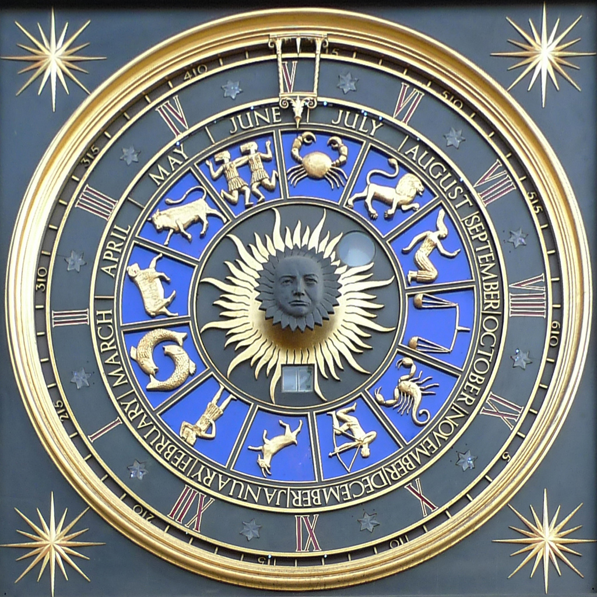

Zodiac signs were determined based upon celestial observations and the twelve lunar cycles within a single year. These zodiacs can allow us to make predictions for certain characteristics a person holds based upon the time of their birth. There are a total of twelve zodiac signs that are unique with their own characteristics. Each sign holds its own traits and patterns as well as strengths and weaknesses. These zodiacs can also be used to predict a person’s future. This is called a horoscope. Newspapers and many websites update horoscopes daily. For your daily horoscope from ELLE, click here.
To determine your zodiac sign, find the sign that's dates correspond with your birthday! Notice that the signs do not start with January the 1st. This is because they are based upon the Sun's location. This also means that the dates can sometimes be inaccurate because the Sun does not always travel at a consistant speed. The dates will only ever be off by a few days at the most. Both positive and negative personality traits that are common for each individual zodiac are also included. These traits are not always true for everyone, so the traits may not match your personality perfectly.
| Zodiac Sign | Dates | Positive Traits | Negative Traits |
|---|---|---|---|
| Aries | (March 21 - April 19) | Determined, Dynamic, Confident | Selfish, Impulsive, Quick-tempered |
| Taurus | (April 20 - May 20) | Patient, Appreciative, Reliable | Jealous, Greedy, Resentful |
| Gemini | (May 21 - June 21) | Adaptable, Communicative, Lively | Superficial, Untrustworthy, Nervous |
| Cancer | (June 21 - July 22) | Emotional, Diplomatic, Sympathetic | Overemotional, Clingy, Moody |
| Leo | (July 23 - August 22) | Faithful, Generous, Loyal | Pompous, Bossy, Intolerant |
| Virgo | (August 23 - September 22) | Practical, Analytical, Modest | Overcritical, Perfectionist, Harsh |
| Libra | (September 23 - October 22) | Sociable, Easygoing, Charming | Indecisive, Self-indulgent, Vain |
| Scorpio | (October 23 - November 21) | Forceful, Passionate, Exciting | Compulsive, Obsessive, Obstinate |
| Sagittarius | (November 22 - December 21) | Optimistic, Honest, Philosophical | Careless, Irresponsible, Blindly Optimistic |
| Capricorn | (December 22 - January 19) | Ambitious, Disciplined, Reserved | Pessimistic, Egotistical, Rigid |
| Aquarius | (January 20 - February 18) | Humanitarian, Inventive, Independent | Vindictive, Detatched, Perverse |
| Pisces | (February 19 -March 20) | Imaginative, Selfless, Compassionate | Self-Sabotaging, Vulnerable, Secretive |
The zodiac signs are sorted into four elements that influence the personality traits of each one. The zodiacs are influenced by the energy that comes with each element. The Fire element is the most assertive and temperamental of the elements and can often be seen as a leader. The Water element can be seen as being intuitive and empathetic. Zodiacs that fall under the water element tend to feel their emotions more deeply than the other elements. The Air element is the most social and analytical element. Zodiacs of the air element need to share their ideas and opinions with the rest of the world. Those who align with the Earth element tend to be practical and stable. They are the most loyal and dependable of the elements.